Screen 01
Home — populated
Member has submitted recipes. Cover · Browse · FAQ · Featured Recipes · Your recipes grid.
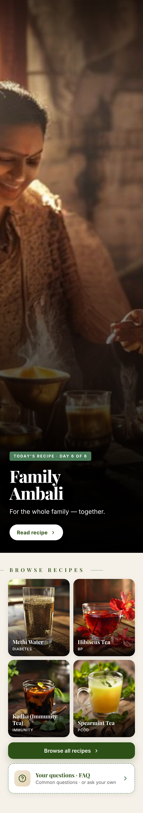
Scroll inside the frame to see Featured + Your recipes
Every state of the Recipes feature, captured straight from the live prototype. Use this as the visual reference alongside the PRD. Each phone frame is the actual screen with proper scroll — drag inside it if the content extends beyond the visible area.
Khushi Bagai · App Pod
Full prototype, V1 scope. 12 screens.
"Recipes" (bottom nav slot 3)
Supabase · reuse existing submissions table + new recipes_likes table

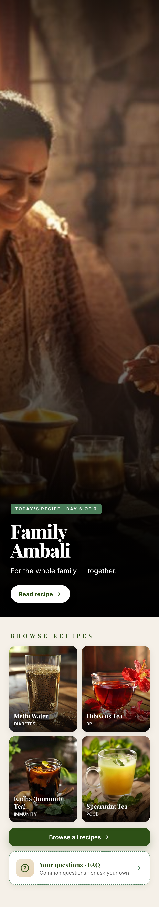
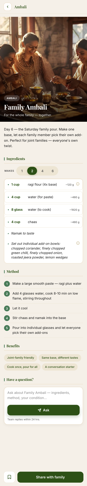
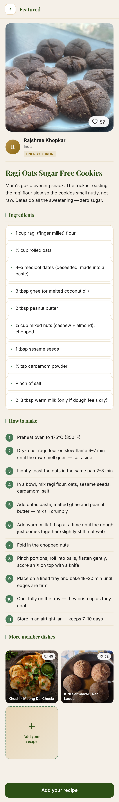
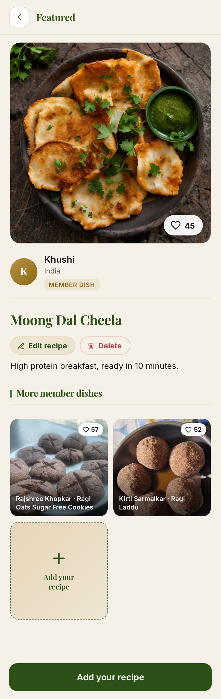
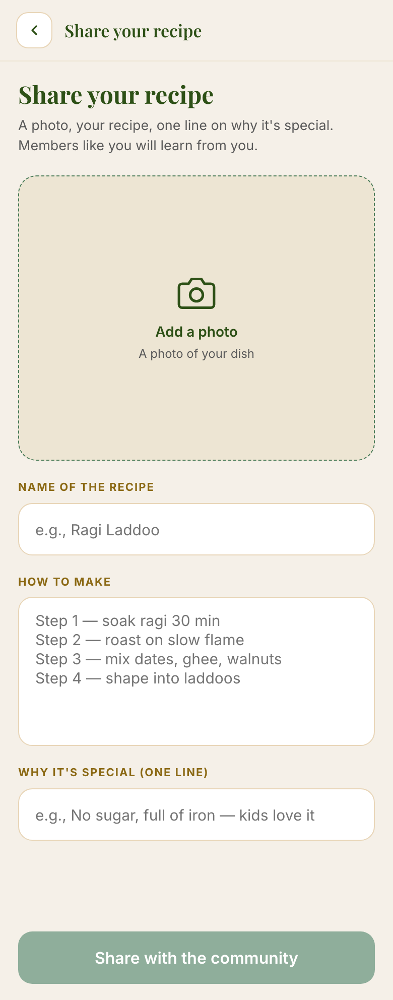
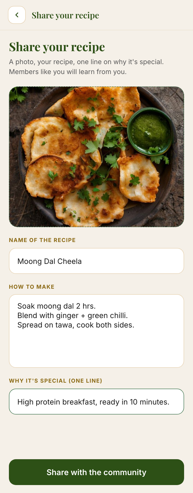
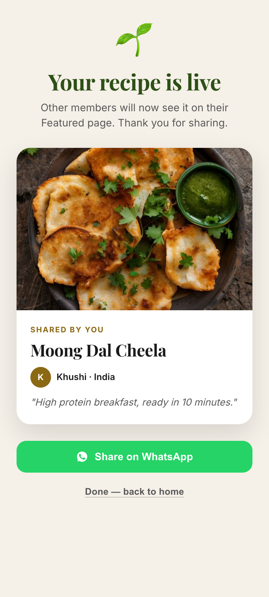
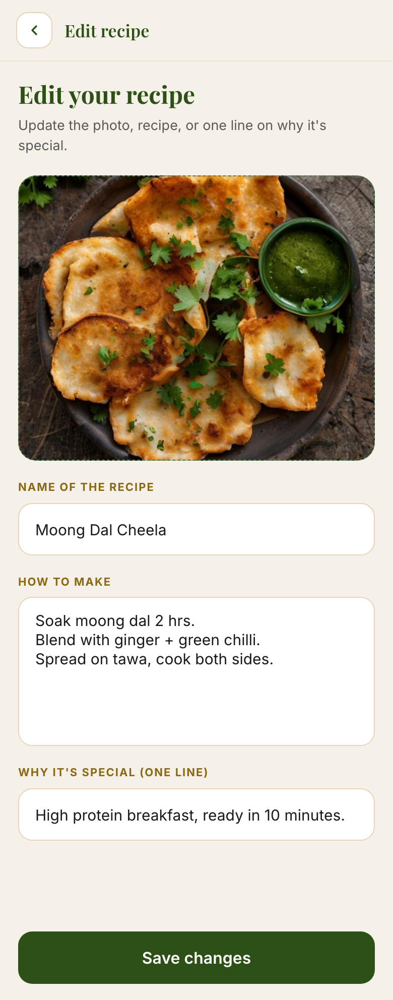
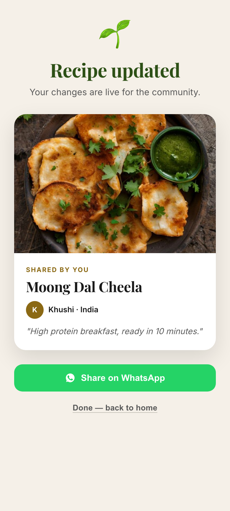

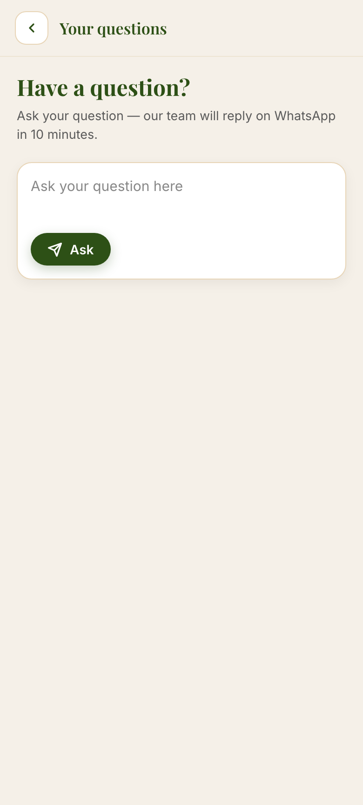